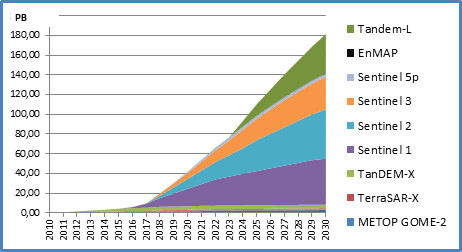

Introduction to
Geospatial Analysis in the Cloud
Why in the Cloud?

Paradigm Shift
- Google Earth Engine (GEE)
- Sentinel Hub
- Open Data Cube (ODC)
- SEPAL
- JEODPP
- pipsCloud
- ...
- openEO
Google Earth Engine API
- Image: band math, clip, convolution, neighborhood, selection ...
- Image Collection: map, aggregate, filter, mosaic, sort ...
- Feature: buffer, centroid, intersection, union, transform ...
- Feature Collection: aggregate, filter, flatten, merge, sort …
- Filter: by bounds, within distance, date, day-of-year, metadata ...
- Reducer: mean, linearRegression, percentile, histogram ….
- Join: simple, inner, outer, inverted ...
- Kernel: square, circle, gaussian, sobel, kirsch …
- Machine Learning: CART, random forests, bayes, SVM, kmeans, cobweb …
- Projection: transform, translate, scale …

Introduction to Javascript
- Open a browser window
- Press F12 to open the developer tools
- Go to the
consoletab - Follow along! (Demo time)
Recap
// Variables are used to store objects, and are defined
// using the keyword var.
var the_answer = 42;
// String objects start and end with double quotes.
var my_variable = "I am a string";
// there are other ways to delare variables in js
let the_answer = 42;
const the_answer = 42;
// we will ignore these
// Statements *should* end in a semi-colon
var test = 'I feel incomplete...'
var test = 'I feel complete...';
- Open a plain text editor (e.g. Notepad on Windows, TextEdit or RStudio )
- Create a file with the extension
.html - Create a
scripttag - Open this file in the browser
- Follow along! (Demo time)
- Create a variable
mynamewith your name - Create a variable
myagewith your age - Calculate your age in days and store it in
myage_days - Print to the console:
Hi, my name is ... and I am ... days old
- Create a function that converts a number of years to a number of days
- Name the function
years2days
// this is the syntax for creating a function:
function say_something(what){
console.log(what)
};
Recap
// Line comments start with two forward slashes.
// Like this line.
/*
Multi line comments start with a forward slash
and a star,
and end with a star and a forward slash.
*/
// Parentheses are used to pass parameters to functions.
// the function below is console.log
console.log("this is the parameter");
// Square brackets are used to create a list of items
var my_list = ['eggplant', 'apple', 'wheat'];
// Square brackets are also used for selecting items within
// a list. 0 refers to the first item in the list.
my_list[0];
// Curly brackets are used to define "dictionaries"
var my_dict = {'food':'bread', 'color':'red', 'number':42};
// Square brackets are used to access items (by key).
my_dict['color'];
// Or you can use the dot notation to get the same result.
my_dict.color;
// Functions can be defined as a way to reuse code and
// make it easier to read.
function years2days(years){
return years*365
};
years2days(34);
// Functions can be defined as a way to reuse code and
// make it easier to read.
var say_hello = function(string) {
return 'Hello ' + string + '!';
};
say_hello('world');
A quick detour to understanding websites
Javascript is part of a trinity that defines most of the web

Let's take this opportunity to explore and understand this.
First steps in Google Earth Engine
Instructions
- Step 1: Go to code.earthengine.google.com
- Step 2: Play around with the Code Editor (create variables, dictionaries, lists...)
- Step 3: Navigate to the location "Visp" using the search bar
- Step 4: Look for the dataset
NASA SRTM Digital Elevation 30m(search bar)
Importing Data
(hit Ctr + Enter to run the script)
var srtm = ee.Image("USGS/SRTMGL1_003")
Importing Data
(hit Ctr + Enter to run the script)
var srtm = ee.Image("USGS/SRTMGL1_003")
console.log(srtm)
Importing Data
(hit Ctr + Enter to run the script)
var srtm = ee.Image("USGS/SRTMGL1_003")
console.log(srtm)
Map.addLayer(srtm);
Importing Data
(hit Ctr + Enter to run the script)
var srtm = ee.Image("USGS/SRTMGL1_003")
console.log(srtm)
Map.addLayer(
srtm
);
Importing Data
(hit Ctr + Enter to run the script)
var srtm = ee.Image("USGS/SRTMGL1_003")
console.log(srtm)
Map.addLayer(
srtm,
{min:0, max:3000} // min & max elevation vals
);
Importing Data
(hit Ctr + Enter to run the script)
var srtm = ee.Image("USGS/SRTMGL1_003")
console.log(srtm)
Map.addLayer(
srtm,
{min:0, max:3000} // min & max elevation vals
palette: "blue, yellow, red" // or your own colours
);